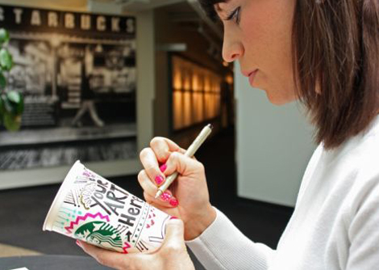
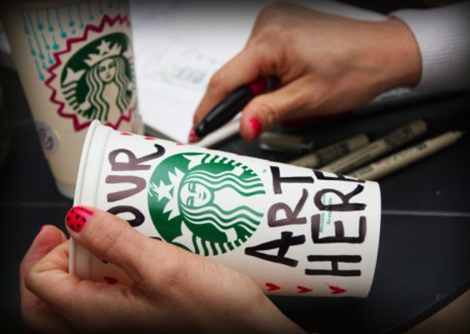

Starbucks
Design Competition
Design Competition
The Starbucks Cup Design Contest (“Contest”) is sponsored by Starbucks Corporation, 2401 Utah Ave. South, Seattle, WA 98134, USA (“Sponsor”), and is administered by Prize Logic, LLC, an independent judging organization, 25200 Telegraph Road, Suite 405, Southfield, MI 48033, USA (“Administrator”).
1. CONTEST PERIOD AND BRIEF OVERVIEW: The Contest begins on April 22, 2014, at 12:00:00 A.M. Eastern Time (“ET”) and ends on May 12, 2014, at 11:59:59 P.M. ET (“Contest Period”). During the Contest Period, an eligible entrant can enter the Contest by following the instructions set forth in Section 3 of these Official Rules. After the Contest Period, there will be a judging period (“Judging Period”) when one (1) grand prize winner (“Grand Prize Winner”) will be selected according to the judging criteria set forth in Section 5. The Judging Period will start on or about May 13, 2014, and will end on or about May 16 2014. The potential Grand Prize Winner will be announced on or about June 2, 2014. Administrator’s computer is the official Contest time-keeping device.

